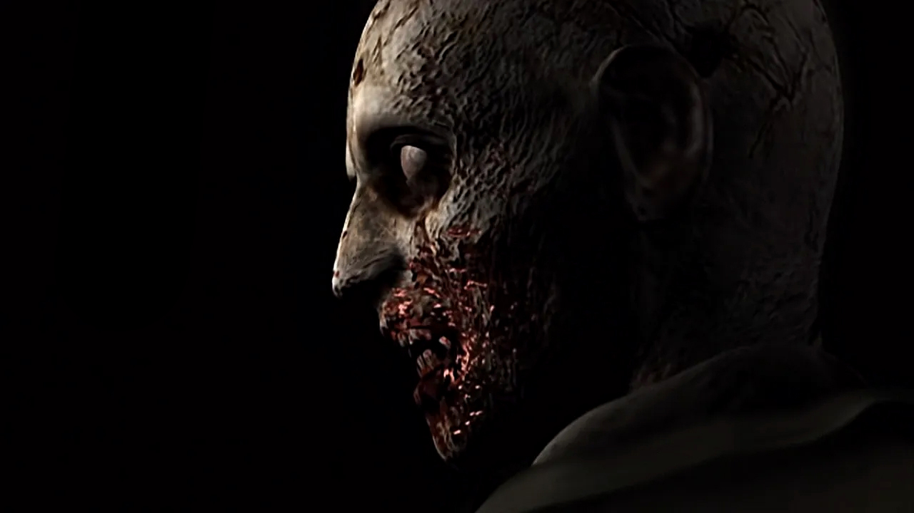

RESIDENT EVIL
A Franquia que Definiu o Survival Horror

SOBRE A FRANQUIA
Resident Evil (conhecido como Biohazard no Japão) é uma das franquias mais icônicas e influentes do mundo dos videogames. Lançada pela Capcom em 1996, a série revolucionou o gênero survival horror, combinando tensão psicológica, recursos limitados e criaturas aterrorizantes. A história gira em torno de surtos virais causados por bioarmas criadas pela sinistra corporação Umbrella Corporation.
Os jogos acompanham um elenco de personagens memoráveis enfrentando hordas de zumbis, mutantes e outras aberrações biológicas em ambientes claustrofóbicos e atmosféricos. Com mais de 25 anos de história, a franquia expandiu-se para filmes, séries, quadrinhos e romances, tornando-se um fenômeno cultural global que continua a assustar e entreter milhões de fãs ao redor do mundo.
POR TRÁS DA FRANQUIA

SHINJI MIKAMI
DiretorO “Pai do Survival Horror” Reconhecido como o criador principal da franquia, ele definiu o gênero survival horror em 1996 e dirigiu o icônico Resident Evil 4 (2005).

TOKURO FUJIWARA
Produtor ExecutivoFoi o mentor de Mikami e o responsável por pedir a criação de um jogo de terror baseado no jogo Sweet Home, sendo considerado co-criador da série

HIDEKI KAMIYA
DiretorDirigiu Resident Evil 2 (1998), essencial para expandir o universo e a narrativa da mansão Spencer para Raccoon City, tornando-o um dos mais amados pelos fãs.

JUN TAKEUCHI
produtorFigura fundamental na Capcom que ajudou a transformar a série em um jogo de ação mais dinâmico e tem sido produtor executivo em jogos recentes e remakes.
IMPACTO GLOBAL
154M+
CÓPIAS VENDIDAS
40+
TÍTULOS
30+
ANOS